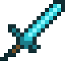

Espada de diamante

Arma cuerpo a cuerpo fabricada con dos diamantes y un palo.
- Categoría
- Armas y Herramientas
- Durabilidad
- 1561 usos
- Daño
- 7
- Lanzamiento
- 29 de enero de 2010

Arma cuerpo a cuerpo fabricada con dos diamantes y un palo.